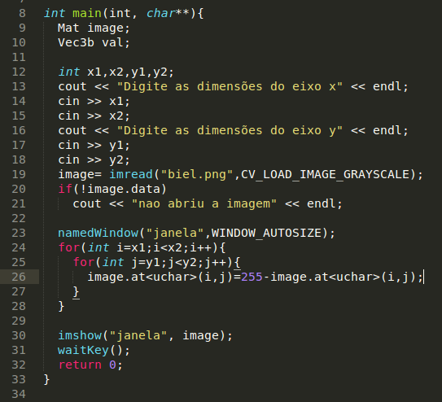

Exercício 3.2 - Negativo

Para deixar a imagem com o efeito negativo você precisa inverter as cores. Isso pode ser feito alterando o valor do pixel para o seu valor contrário. Dessa forma, só precisamos subtrair o valor atual do pixel de 255.
A linha de código abaixo ilustra isso e o código:
image.at

Exercício 3.3 - Troca de Regiões
Esse algoritmo divide a imagem em 4 regiões e em seguida as troca de maneira aleatória.